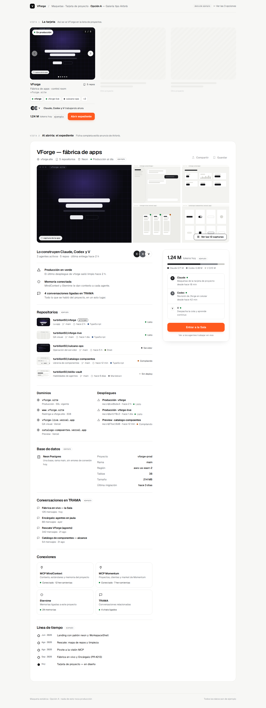
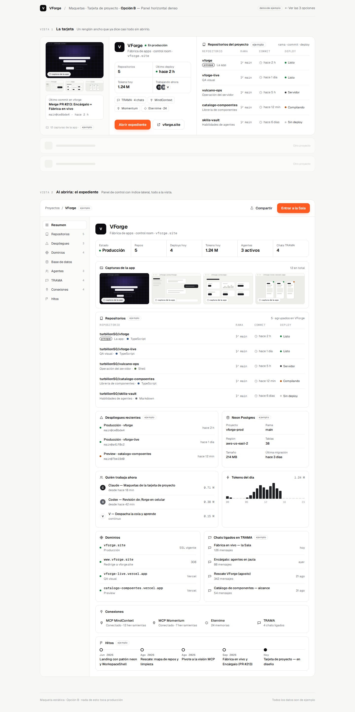
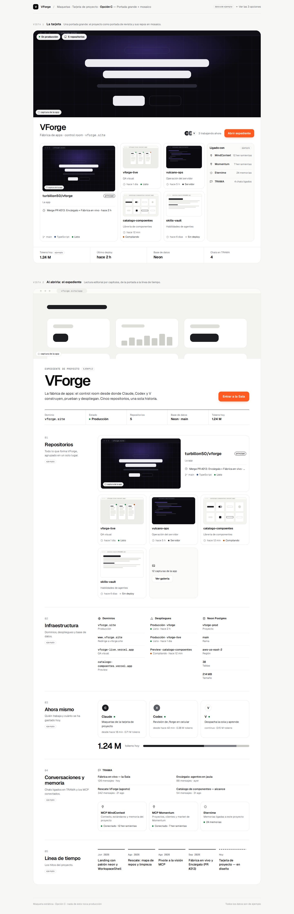

Opción A
Galería tipo Airbnb
Tarjeta compacta con carrusel de capturas arriba; al abrirla, ficha tipo anuncio con galería, repos en lista y un panel lateral fijo para entrar a la Sala.
Todo VForge en una sola tarjeta —repos, capturas, expediente, chats de TRAMA y conexiones MCP— en tres estructuras distintas. Cada una trae la tarjeta y la vista de expediente al abrirla. Nada está aplicado a la app: tú eliges.

Tarjeta compacta con carrusel de capturas arriba; al abrirla, ficha tipo anuncio con galería, repos en lista y un panel lateral fijo para entrar a la Sala.

Un renglón ancho que ya muestra repos, deploys, tokens y conexiones sin abrirlo; el expediente es un panel tipo Linear con índice lateral y tableros.

Portada de revista con los 5 repos en mosaico de capturas; el expediente se lee por capítulos (repos, infra, ahora mismo, memoria, hitos).
Una sola acción en naranja por vista: “Abrir expediente” en la tarjeta y “Entrar a la Sala” en el expediente.